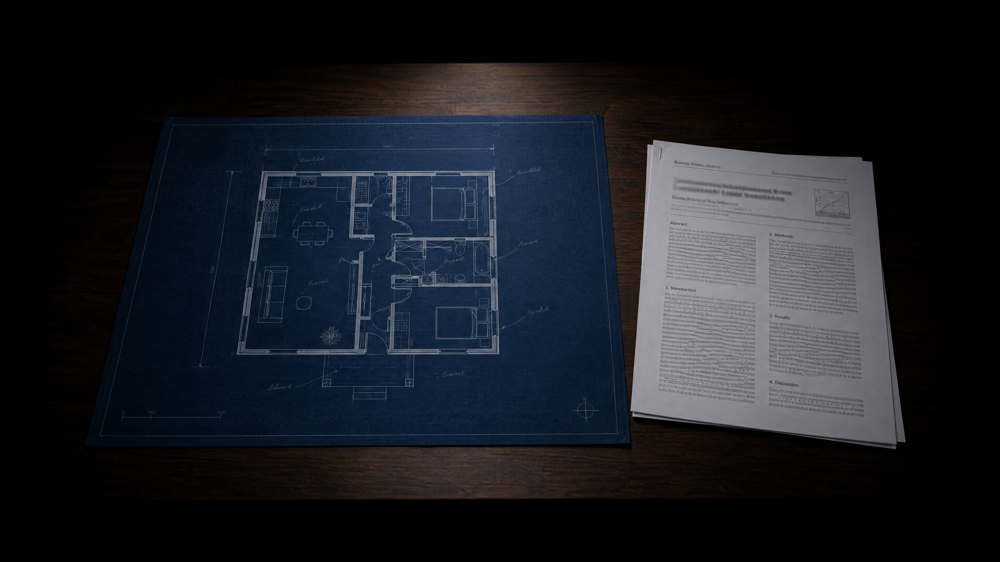
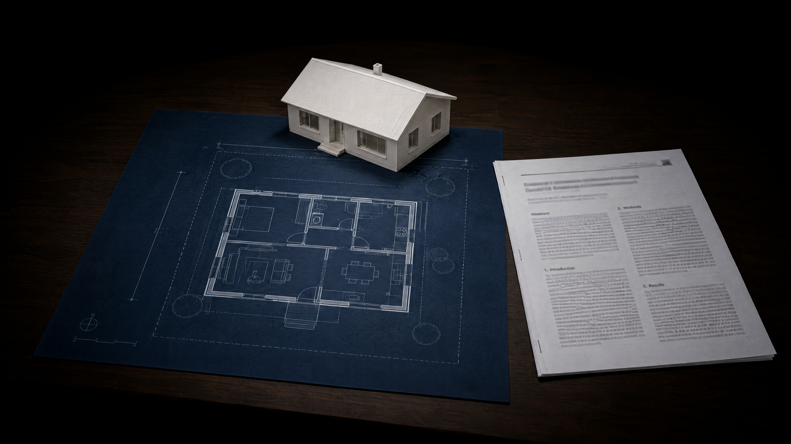

readers don't read a paper from start to end, they jump to the room they need, so every room has to be where they expect it.
imrad
how imrad won
editors made imrad the rule, because readers can then jump straight to the section they need.
how long is each part?
the results take the most room, and the theory must not crowd them out.
the hourglass
the introduction ends with your question, and the discussion begins with its answer.
introduction
the introduction narrows like a funnel from the topic down to your question.
methods
the methods are a recipe that would let someone else repeat your analysis.
results
the results report what the data say, and leave what it means to the discussion.
discussion
the discussion opens with the answer and then widens like an upside-down funnel.
where does this sentence belong? “vegetarians named a higher price limit, probably because they value animal welfare.”
- introduction
- methods
- results
- discussion
result or interpretation
a result says what the data show, and the “because” waits for the discussion.
dissecting a real paper
the paper in miniature

write your question at the end of the introduction and your answer at the start of the discussion, and let everything else connect the two.